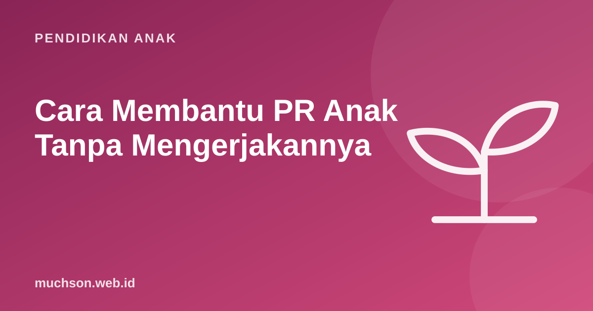

Beranda › Artikel › Pendidikan Anak
Pendidikan AnakCara Membantu PR Anak Tanpa Mengerjakannya
Jam tujuh malam, PR belum selesai, anak menangis, orang tua frustrasi, dan akhirnya PR dikerjakan orang tua. Skenario ini sangat umum. Penelitian menunjukkan cara orang tua terlibat dalam PR lebih penting daripada seberapa banyak. Berikut cara membantu yang benar-benar membuat anak belajar.

Apa kata riset tentang keterlibatan orang tua
Tinjauan penelitian oleh Patall, Cooper, dan Robinson (2008) menemukan bahwa keterlibatan orang tua dalam PR punya efek yang beragam: membantu bila berbentuk dukungan terhadap kemandirian anak, tetapi bisa merugikan bila berbentuk kontrol dan campur tangan berlebihan. Panduan Education Endowment Foundation (EEF) di Inggris menyimpulkan hal serupa: orang tua sebaiknya mengetahui PR anak dan mendukung anak mengerjakannya, misalnya membantu membuat rutinitas, merencanakan, dan mengatur waktu, daripada terlibat langsung mengerjakan tugasnya.
Lima peran orang tua yang paling berdampak
- Penata panggung. Tempat tenang, alat lengkap, waktu yang sama setiap hari.
- Perencana bersama. "PR hari ini apa saja? Mana yang dikerjakan dulu?"
- Penanya. Pertanyaan yang membuat anak berpikir, bukan jawaban.
- Penyemangat. Mengakui usaha dan rasa frustrasinya.
- Penghubung dengan guru. Memberi tahu guru bila PR terlalu sulit atau terlalu lama.
Kalimat ajaib saat anak macet
| Situasi | Coba katakan |
|---|---|
| Anak bilang "aku tidak bisa" | "Bagian mana yang sudah kamu pahami? Kita mulai dari situ." |
| Anak minta jawabannya | "Apa yang diminta soal ini? Coba bacakan dengan suaramu." |
| Anak salah | "Coba periksa lagi nomor 3. Ada yang perlu dicek?" (tanpa menunjuk letak salahnya) |
| Anak frustrasi | "Ini memang sulit. Mau istirahat 5 menit dulu?" |
| Anak berhasil | "Kamu tadi membaca ulang soalnya dan menemukan kesalahannya sendiri. Itu cara yang bagus." |
Kesalahan di PR adalah informasi berharga bagi guru: menunjukkan bagian mana yang belum dipahami. PR yang sempurna karena dikoreksi orang tua menyembunyikan informasi itu.
Mengatasi drama PR
Bila Anda tidak paham materinya
Kurikulum dan cara mengerjakan soal sekarang bisa berbeda dari zaman orang tua sekolah. Itu wajar. Yang bisa dilakukan:
- Jujur. "Mama juga tidak yakin. Ayo lihat contoh di buku catatanmu."
- Minta anak mengajari Anda. Menjelaskan adalah cara belajar yang sangat kuat.
- Hindari mengajarkan cara lain yang bertentangan dengan cara guru, karena bisa membingungkan. Tanyakan cara yang diajarkan di kelas.
- Hubungi guru untuk meminta penjelasan atau contoh.
Penelitian tentang kecemasan matematika menunjukkan anak dari orang tua yang cemas matematika belajar lebih sedikit, terutama bila orang tua sering membantu PR matematika. Jaga kalimat Anda tetap positif tentang pelajaran yang sedang dikerjakan.
Dari PR ke kemandirian
Tujuan jangka panjang adalah anak mengerjakan PR secara mandiri. Kurangi keterlibatan secara bertahap: dari duduk menemani, menjadi berada di ruangan yang sama, lalu hanya mengecek di akhir. Rayakan setiap langkah kemandirian.
Kemampuan bekerja mandiri, mencoba dulu sebelum bertanya, dan memeriksa hasil sendiri juga dilatih lewat kegiatan seperti coding, di mana program yang salah bisa diperbaiki tanpa menunggu orang lain. PixelKode dirancang agar anak bisa belajar sendiri dengan petunjuk bertahap, sementara orang tua cukup menemani dan bertanya.
Tanya jawab
Apakah orang tua harus membantu PR anak?
Bagaimana jika anak menangis saat mengerjakan PR?
Perlukah mengoreksi semua kesalahan PR anak?
Saya tidak paham materi PR anak. Apa yang harus dilakukan?
Sumber dan bacaan lanjut
- Patall, E. A., Cooper, H., & Robinson, J. C. (2008). Parent involvement in homework: A research synthesis. Review of Educational Research
- Education Endowment Foundation: Working with Parents to Support Children's Learning
- Cooper, H. dkk. (2006). Does homework improve academic achievement?
- Maloney, E. A. dkk. (2015). Intergenerational effects of parents' math anxiety